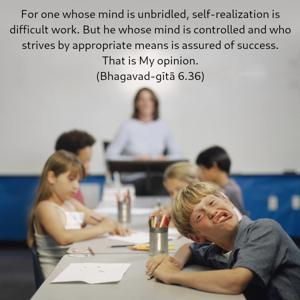
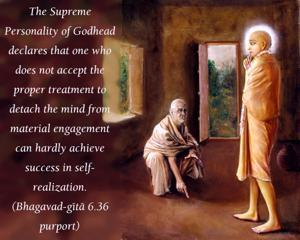
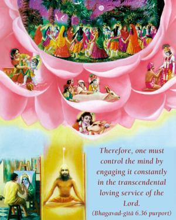
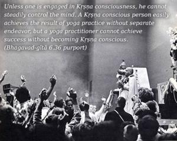

For one whose mind is unbridled, self-realization is difficult work. But he whose mind is controlled and who strives by appropriate means is assured of success. That is My opinion.




The Supreme Personality of Godhead declares that one who does not accept the proper treatment to detach the mind from material engagement can hardly achieve success in self-realization. Trying to practice yoga while engaging the mind in material enjoyment is like trying to ignite a fire while pouring water on it. Yoga practice without mental control is a waste of time. Such a show of yoga may be materially lucrative, but it is useless as far as spiritual realization is concerned. Therefore, one must control the mind by engaging it constantly in the transcendental loving service of the Lord. Unless one is engaged in Kṛṣṇa consciousness, he cannot steadily control the mind. A Kṛṣṇa conscious person easily achieves the result of yoga practice without separate endeavor, but a yoga practitioner cannot achieve success without becoming Kṛṣṇa conscious.